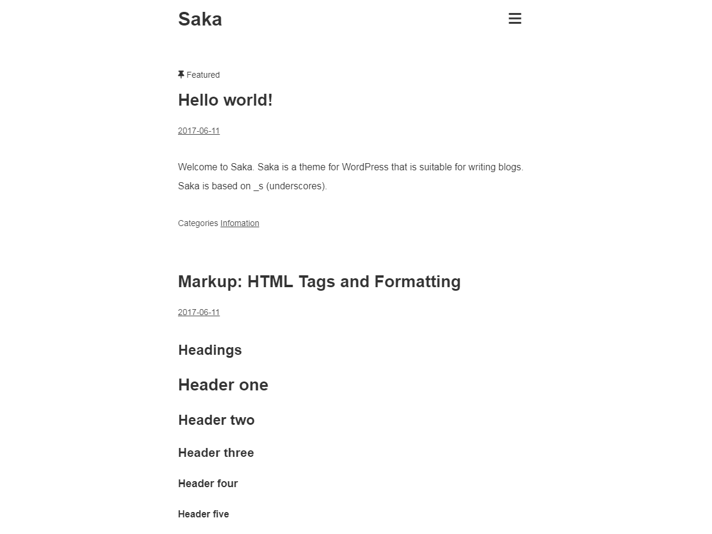
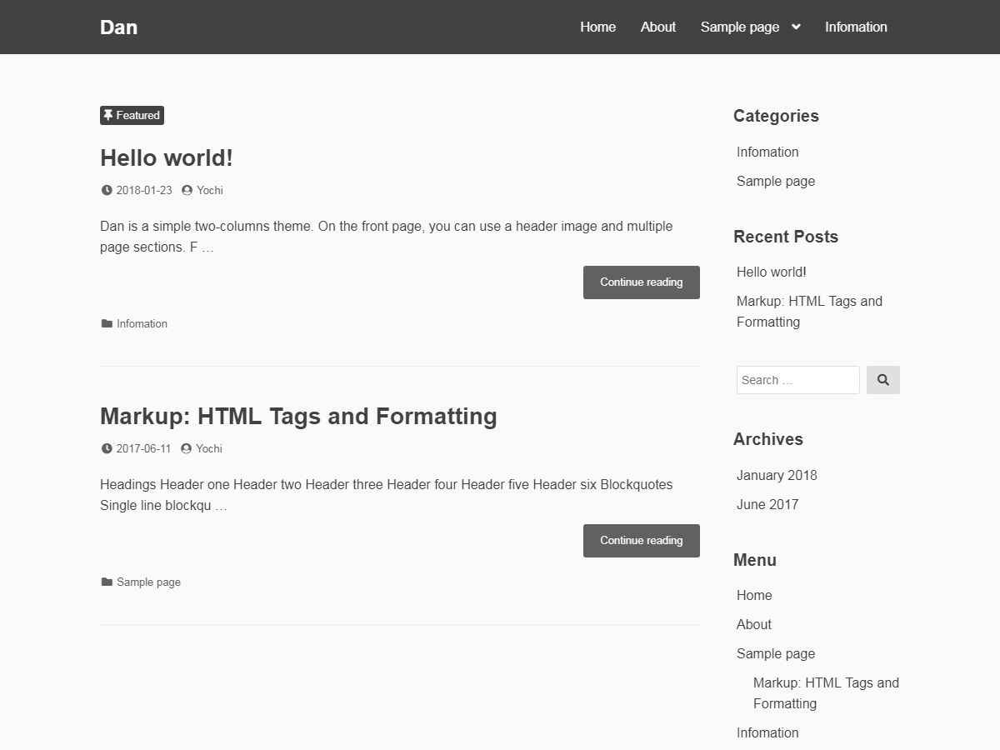

Yochi INFO
About
「Yochi INFO」は"Yochi"のポートフォリオサイトです。
シンプルでミニマルなサイトづくりを得意としており、WordPress公式ディレクトリ掲載テーマ制作の実績があります。
Profile
- Name
- Yochi
- From
- Nagasaki, Japan
- Skills
- HTML / CSS / WordPress
Works


「Yochi INFO」は"Yochi"のポートフォリオサイトです。
シンプルでミニマルなサイトづくりを得意としており、WordPress公式ディレクトリ掲載テーマ制作の実績があります。